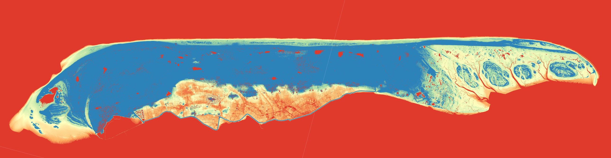
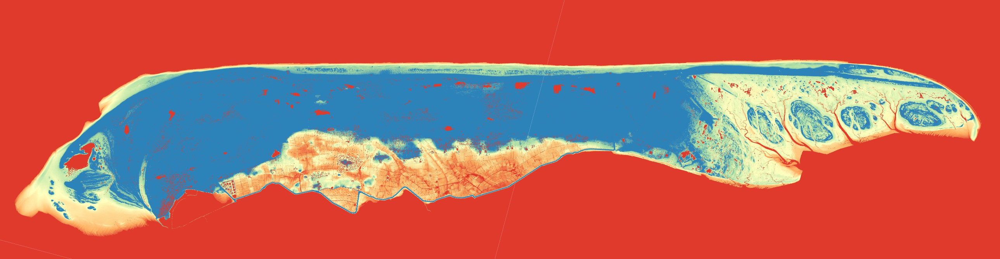

Digital Terrain Model (DTM) of Terschelling
Below are the final maps of Terschelling: a detailed view of the eastern part with its rivers and an overview of the entire island. These maps highlight the elevation differences crucial for understanding the island's flood risks and planning for climate resilience.
 

Introduction to Terschelling
Terschelling is a beautiful island in the Netherlands, known for its untouched coastal landscapes. Unlike more popular islands like Texel, Terschelling experiences minimal human interference, allowing natural forces to shape its terrain. My personal connection to the island, through my parents' annual visits and my own experience, inspired me to choose this location for my project.
Process of Creating the Digital Terrain Model
I started by importing the Digital Terrain Model (DTM) data for Terschelling, downloaded from the Delft University of Technology's geotiles repository. After unzipping the files, I created a new QGIS project and added the DTM files one by one. I then merged these files into a single GeoTiff, maintaining the original coordinate system. This GeoTiff served as the basis for my analysis.
To understand the terrain's elevation range, I identified several points' heights and adjusted the GeoTiff's symbology to reflect these values. I chose a color ramp that highlights elevation differences without overwhelming the map's details. Despite experimenting with shading and contour options, I found a simpler color representation to be more effective.
After finalizing the map's appearance, I created print layouts for both the entire island and a zoomed-in section featuring Terschelling's rivers. Rotating the map slightly improved its visual appeal and efficiency. Finally, I added essential elements like a scale bar, north arrow, and customized legend before exporting the layouts as PDFs and converting them to images.
Color Scheme and Interpretation
I chose a color scheme that uses red to indicate low areas, warning viewers of potential flood risks, while blue represents higher elevations, suggesting safety and tranquility. This choice aims to alert viewers to the dangers of low-lying areas, particularly near the island's rivers. The zoomed-in map of East Terschelling, with its stunning rivers, evokes a sense of beauty and calm.
The map suggests a high likelihood of historical flooding in Terschelling, especially in the island's lower regions. The eastern part of the island, with its low elevation and river connections, appears particularly vulnerable to flooding.
Comparing Color Schemes and Elevation Stretches
In an alternative map focusing on the island's higher parts, the height profile of the dunes is more prominent, but the rivers lose some detail. This version is useful for highlighting elevated areas but less effective for depicting low-lying flood-prone zones.
Interesting Observations
One surprising observation was that the meadows on Terschelling are mostly low-lying, while the village is situated on higher ground, ensuring its safety. This finding contrasts with other parts of the Netherlands, where fields are typically low due to peatland shrinkage. Terschelling's soil composition, likely a mix of sand and regular soil, differs significantly from mainland peatlands.
These maps were created in QGIS using DTM data, showcasing the island's terrain and emphasizing areas vulnerable to flooding. The biggest challenge was exporting the map without losing stylistic elements, but the end result is both beautiful and functional, offering valuable insights for climate catastrophe planning.